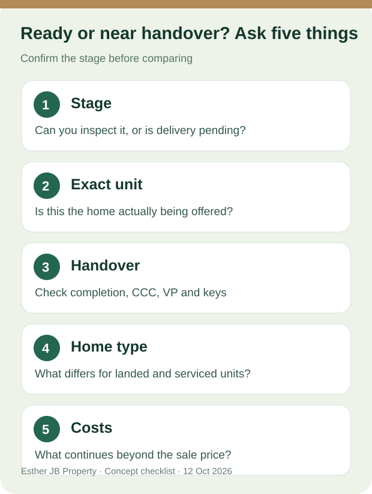

Johor Bahru buyer questions · Sources checked: 12 October 2026
Ready-Built or Near-Handover in JB? Five Questions to Ask
First establish the stage. A completed home whose specific unit can be viewed is different from a new project described as nearing handover. Neither label establishes a key-collection date. Austin and the CIQ area are search areas, not proof that every nearby project is ready or close to delivery. KPKT guidance on completed housing and handover

Original checklist illustration, not evidence about any particular building.
1. Is this a completed home or a project still awaiting handover?
Ask the seller or developer to identify the current stage and show the relevant documents. If the unit is completed, ask whether you can view it. If handover is still expected, check the latest written progress and contract rather than turning a target into a guarantee. Malaysia's National Housing Department recommends checking project materials and expected completion information. Buyer tips
2. Can I view the exact home being offered?
Where possible, confirm the unit identifier and inspect daylight, view, noise, parking and shared areas. If you can see only a show unit, floor plan, site exterior or a different floor, record what is still unknown.
3. Are “near handover,” “completed” and “keys available” the same thing?
No. For a developer unit, ask about CCC, vacant possession (VP), written progress and key collection. For a resale home, ask the lawyer to check the sale agreement, occupation status and delivery terms. KPKT distinguishes CCC and VP; “keys soon” should not be treated as a completed handover. KPKT guidance
4. What changes between a landed home and a serviced apartment?

The person and interior are conceptual, not a listed home or an actual buyer.
At a landed home, look at the roof, walls, signs of moisture, drainage, parking and ordinary travel routes; have the title and transfer conditions checked. JKPTG landowner guidance
At a serviced apartment, inspect the unit, parking, lifts and facilities currently open; ask for title and use details, maintenance charges and sinking fund. If it has not been handed over, building operation remains to be verified. KPKT Strata Handbook
5. Which costs belong in the budget?
Beyond the asking price, check deposit needs, actual lender terms, possible fit-out or repairs, parking and ongoing costs. Confirm strata fees for the specific serviced apartment; allow for upkeep in a landed home. Neither “ready” nor “near handover” guarantees financing, rent or appreciation.
To ask about completed or near-handover homes in Austin or the CIQ area, tell Esther your budget, home type and target move-in timeframe. We will verify current options, whether the specific unit can be viewed and the formal handover stage before suggesting a visit.
Help me shortlist JB homes matching my timing
Ask Esther%3A%20%3B%20landed%20or%20serviced%20apartment%3A%20%3B%20completed%20or%20near-handover%3A%20%3B%20target%20move-in%3A%20.)
Related reading: Full guide to ready-built and near-handover homes in JB · Meet Esther
Sources and review date
- KPKT guidance on completed housing, CCC and VP
- National Housing Department buyer tips
- KPKT Strata Handbook 2.0
- JKPTG landowner guidance
Checked on 12 October 2026. This is a viewing-question list, not a substitute for contract, title, building or financing checks on a particular transaction.